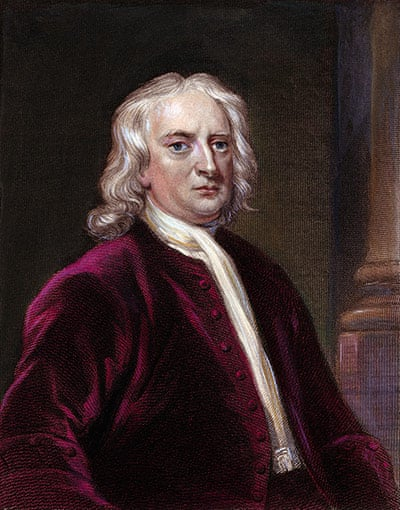
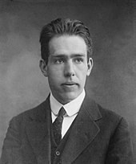
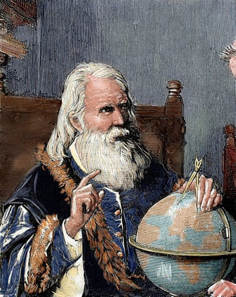

Isaac Newton
Co-inventor of calculus, a major contributor to the science of optics and a gifted mathematician, Isaac Newton (1643-1727), who was born in Lincolnshire, outlined the laws of mechanics that now underpin vast swaths of classical physics. Most important of all, Newton outlined the principle of gravity, which explained how the planets revolve round the sun. During his life, he was showered with honours, including the presidency of the Royal Society. He is renowned as a supreme rationalist, though he actually wrote more about alchemy and religion, including a 300,000-word treatise that attempted to prove the pope was really the Antichrist and an “apocalyptic whore”.
Niels Bohr
Co-inventor of calculus, a major contributor to the science of optics and a gifted mathematician, Isaac Newton (1643-1727), who was born in Lincolnshire, outlined the laws of mechanics that now underpin vast swaths of classical physics. Most important of all, Newton outlined the principle of gravity, which explained how the planets revolve round the sun. During his life, he was showered with honours, including the presidency of the Royal Society. He is renowned as a supreme rationalist, though he actually wrote more about alchemy and religion, including a 300,000-word treatise that attempted to prove the pope was really the Antichrist and an “apocalyptic whore”.
Galileo Galilei
Born in Pisa, Galileo (1564-1642) initially trained as a doctor. On hearing of the invention of the telescope in 1609, he built his own and turned it to the heavens, revealing the existence of sunspots and a pitted, mountainous surface on the moon: the heavens were not incorruptible. His studies also provided support for the idea that the Earth revolves round the sun. This got Galileo into considerable trouble with the Catholic church and he was forced to abandon that backing in 1633. His work on falling bodies also laid the groundwork for Newton’s subsequent theories.
